무선설비산업기사 (2007-09-02 기출문제)
1과목: 디지털 전자회로
1. FM 방식에서 변조를 깊게 하여 최대 주파수 편이가 △f라고 했을 때 주파수 대역폭 B는?
- B=△f
- B=2ㆍ△f
- B=3ㆍ△f
- B=4ㆍ△f
(정답률: 77%)

2. RC 결합 저주파 증폭회로에서 낮은 주파수의 이득이 감소되는 주 원인은?
- 병렬 커패시턴스 때문에
- 이미터의 저항 때문에
- 컬렉터의 저항 때문에
- 결합 커패시턴스의 영향 때문에
(정답률: 70%)
3. 다음은 수정편의 리액턴스 특성이다. 발진에 이용되는 주파수 범위는?
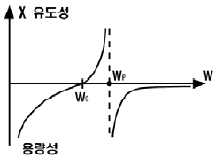
- ωs＜ω＜ωP
- ωP＜ω
- ωS＞ω
- ωS=ω
(정답률: 알수없음)
4. 1[㎑] 신호파로 710[㎑] 반송파를 진폭 변조했을 때 피변조파에 포함되지 않는 주파수[㎑]는?
- 700
- 709
- 710
- 711
(정답률: 알수없음)
5. 그림과 같은 논리회로의 출력 D는?
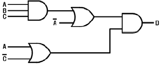
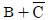
- ABC
- AB+BC
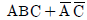
(정답률: 알수없음)
6. 다이오드를 사용하여 그림과 같은 회로를 구성하고 입력 전압(Vi)을 -6[V]에서 6[V]까지 변화시킬 때 출력전압 (Vo)의 변화는? (단, 다이오드의 Cutin 전압은 0.6[V]이다.)
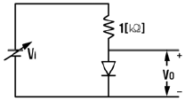
- 0.6[V] ~ 6[V]
- -6[V] ~ 6[V]
- -6[V] ~ 0[V]
- -6[V] ~ 0.6[V]
(정답률: 알수없음)
7. 다음 중 소비전력이 가장 적은 소자는?
- TTL
- ECL
- RTL
- CMOS
(정답률: 50%)
8. 그림과 같은 연산 증폭기에서 V1 = 0.1[V], V2 = 0.2[V], V3 = 0.3[V]일 때 출력전압 Vo[V]는?
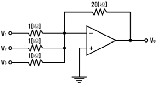
- -2
- -6
- -12
- -18
(정답률: 알수없음)
9. JK 플립플롭을 사용하여 D형 플립플롭을 만들려면 외부 결선은 어떻게 하는 것이 옳은가?
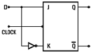
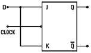
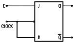
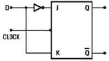
(정답률: 80%)
10. 다음 중 DC 결합과 AC 결합이 함께 사용되는 발진기는?
- 비안정 멀티바이브레이터
- 단안정 멀티바이브레이터
- 쌍안정 멀티바이브레이터
- 블로킹 발진기
(정답률: 59%)
11. 트랜지스터를 증폭작용에 이용할 경우의 동작상태는?
- 포화상태
- 활성상태
- 차단상태
- 역활성상태
(정답률: 64%)
12. 이미터 접지일 때 전류증폭율이 각각 hFE1. hFE2 인 두개의 트랜지스터 Q1과 Q2를 그림과 같이 접속하였을 때의 컬렉터 전류 IC 는?
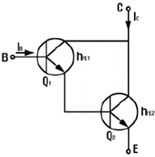
- IC = hFE1ㆍhFE2ㆍIB
- IC = (hFE1 / hFE2)ㆍIB
- IC = hFE2(hFE2+1)IB
- IC = hFE1ㆍIB + hFE2(hFE2+1)ㆍIB
(정답률: 48%)
13. 다음 회로에서 저항 rE 의 역할로 옳은 것은?
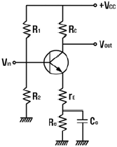
- 전압이득과 왜율을 모두 감소시킨다.
- 전압이득을 증가시킨다.
- 전압이득은 증가시키고 왜율은 감소시킨다.
- 전압이득은 감소시키고 왜율은 증가시킨다.
(정답률: 47%)
14. 다음 콜피츠 발진회로의 발진주파수를 나타내는 식은?
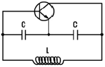
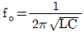
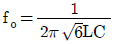
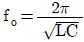
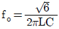
(정답률: 65%)
15. 전파정류기의 DC 출력 전력[W]은 반파정류기 전력의 몇 배가 되는가?
- 2
- 4
- 8
- 16
(정답률: 알수없음)
16. 그림과 같은 회로에서 기전력 E를 가하고 SW를 ON 하였을 때 저항 양단의 전압 VR은 t초 후에 어떻게 되는가?
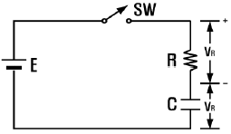
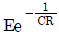
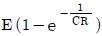
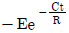
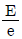
(정답률: 40%)
17. 다음과 같은 회로가 수행할 수 있는 논리 동작은? (단, 부논리이며 A, B는 입력단자이다.)
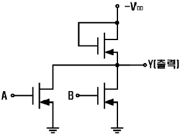
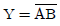
- Y=AB
- Y=A+B
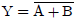
(정답률: 59%)
18. 다음 그림과 같이 NAND 게이트가 연결되어 있다. 이 회로 와 등가인 게이트는?
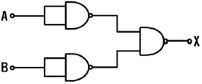
- OR 게이트
- AND 게이트
- NOR 게이트
- NAND 게이트
(정답률: 43%)
19. 다음 그림에서 합(s)에 대한 논리식이 옳은 것은?
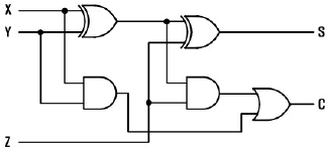
- (x+y)⊕z
- (x⊕y)⊕z
- xz+y
- xy⊕yz
(정답률: 55%)
20. 두 입력을 비교하여 A＞B 이면 출력이 1이고, A≤B 이면 출력이 0 이 되는 논리회로를 설계하고자 한다. 이 조건을 만족하는 논리식은?
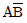
- AB
- A+B
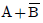
(정답률: 37%)
2과목: 무선통신 기기
21. 다음 중 AM 수신기와 비교하여 FM 수신기의 특징이 아닌것은?
- 통과 대역폭이 넓다.
- 진폭 제한기를 사용함으로 페이딩 영향이 개선된다.
- 국부발진 회로가 사용된다.
- 무신호시 잡음 제거를 위해서 스켈치 회로가 사용된다.
(정답률: 19%)
22. 위성통신의 다원접속방식 중 복수개의 반송파를 스펙트럼이 서로 겹치지 않도록 주파수 축상에 배치함으로써 실현되는 다원 접속방식은?
- 주파수분할 다원접속(FDMA)
- 시분할 다원접속(TDMA)
- 부호분할 다원접속(CDMA)
- 임의분할 다원접속(SDMA)
(정답률: 62%)
23. 증폭된 신호의 기본파 진폭이 100[V]이고, 제2고조파 진폭이 8[V], 제3고조파 진폭이 6[V] 이었다면 왜율은? (단, 측정값은 최대값이다.)
- 5[%]
- 10[%]
- 15[%]
- 20[%]
(정답률: 70%)
24. 무선통신에 사용되고 있는 확산 스펙트럼 방식이 아닌것은?
- 직접 확산(DS)
- 주파수 도약(FH)
- 시간 도약(TH)
- 델타변조 도약(DMH)
(정답률: 알수없음)
25. 다음 중 AM 송신기의 구성요소에 속하지 않는 것은?
- IDC 회로
- 발진회로
- 전력증폭회로
- 변조회로
(정답률: 알수없음)
26. 다음 중 마이크로파 다중 통신방식에서 무급전 중계방식에 대한 설명으로 적합하지 않은 것은?
- 비교적 근거리의 송ㆍ수신국 사이에 산과 같은 장애물이 있을 때 사용된다.
- 반사판 등에 의해서 그 전파의 도래방향 만을 변화시킨다.
- 다단중계에 매우 적합하다.
- 마이크로파의 직진성을 이용한다.
(정답률: 50%)
27. 다음 중 수퍼헤테로다인 수신기에서 수신주파수와 국부발진 주파수의 차가 항상 중간주파수가 되도록 조정하는 회로는?
- 트래킹회로
- 디엠퍼시스 회로
- AGC 회로
- 주파수 변별기 회로
(정답률: 알수없음)
28. 수정 발진기의 발진주파수(f) 범위 및 안정도에 대한 설명으로 가장 적합한 것은?(단, 직렬공진 주파수 , : fS, 병렬 공진 주파수 : fP)
- fP＜f＜fS 이며 좁을수록 안정도가 좋다.
- fS＜f＜fP 이며 넓을수록 안정도가 좋다.
- fS＜f＜fP 이며 좁을수록 안정도가 좋다.
- fP＜f＜fS 이며 넓을수록 안정도가 좋다.
(정답률: 44%)
29. 중간주파수가 500[㎑]인 수퍼헤테로다인 수신기에서 희망파 1000[㎑]에 대한 영상주파수는 얼마인가?
- 1500[㎑]
- 2000[㎑]
- 2200[㎑]
- 3200[㎑]
(정답률: 알수없음)
30. 위성통신의 특징에 관한 설명 중 장점이 아닌 것은?
- 원거리통신에 적당하다.
- 광범위한 지역 및 해역을 커버할 수 있다.
- 안정된 대용량의 통신이 가능하다.
- 지구국과 위성사이에서의 지연시간이 발생한다.
(정답률: 알수없음)
31. 고주파 증폭기의 이득이 30[㏈], 변환이득이 -3[㏈]인 수 퍼헤테로다인 수신기의 입력에 50[㎶]의 고주파 전압을 걸었던바 검파기 입력에 0.5[V]를 얻었다면 중간 주파 증폭기의 이득은 몇 [㏈] 인가?
- 27
- 53
- 77
- 80
(정답률: 50%)
32. 다음 중 송신기의 고조파 성분 함유비 측정에 가장 적합한 계측기는?
- 레벨메터
- 오슬로스코프
- 스펙트럼 분석기
- 디지털멜티메터
(정답률: 알수없음)
33. 수신기의 종합이득 측정시 표준신호발생기(SSG)와 피측정 수신기와의 사이에 삽입하는 시험용 회로 또는 기기는?
- Dummy Antenna
- Spectrum Analyzer
- ATT
- VTVM
(정답률: 31%)
34. 다음은 FM 송신기 블록도의 일부이다. 3체배한 후 최대주파수 편이가 ±6[㎑] 이면, FM 변조한 뒤(3체배하기 전)의 최대 주파수 편이 Δf는 얼마인가?
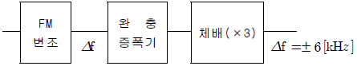
- △f=±1[kHz]
- △f=±2[kHz]
- △f=±6[kHz]
- △f=±12[kHz]
(정답률: 75%)
35. SSB 수신기에서 동기조정(speech clarifier)을 행하는 목적은?
- 링(ring) 복조를 하기 위하여
- SSB 반송파만을 수신하기 위하여
- 송ㆍ수신 주파수 편차를 줄이기 위하여
- 상, 하 양측파대를 동시에 수신하기 위하여
(정답률: 알수없음)
36. SAW 필터에 대한 설명 중 적합하지 않은 것은?
- 일반적으로 BPF에 이용된다.
- 특성의 미세 조정을 간단히 할 수 있다.
- 재료로는 수정 등의 단결성이나 세라믹 등이 사용된다.
- 저삽입손실, 고신뢰성, 양산성 등 장점이 많다.
(정답률: 31%)
37. 측정기에 널리 사용되고 있는 볼로메터(Bolometer)에 대한 설명 중 잘못된 것은?
- 매우 작게 만들 수 있어 도파관 전송선에 장착하여 적은 전력측정에 사용된다.
- 감도는 바레터가 서미스터 보다 둔하다.
- 서미스터의 주 재료는 금속이다.
- 방향성 결합기 같은 분기 회로를 사용하여 대전력을 감시하는데에도 사용할 수 있다.
(정답률: 34%)
38. 다음 중 신호의 전송이나 증폭과정에서 생기는 주파수 특성 변형을 고르게 보정해 주는 것은?
- 등화기
- 대역 여파기
- 진폭 제한기
- 자동 이득 조절기
(정답률: 67%)
39. 다음 정전압 회로에서 Q2 의 역할은?
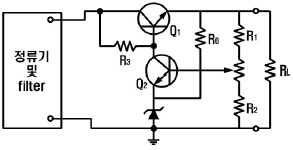
- 제어용
- 증폭용
- 비교용
- 기준용
(정답률: 75%)
40. 위성통신에 사용하는 전파창이란 어느 주파수 대인가?
- 1[㎓] 이하
- 1[㎓] ~ 10[㎓]
- 10[㎓] ~ 15[㎓]
- 20[㎓] 이상
(정답률: 58%)
3과목: 안테나 개론
41. 구형도파관의 모양이 다음 그림과 같을 때 차단 주파수는? (단, 관내의 유전체는 진공이고, TE10 모드이다.)
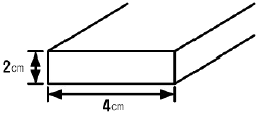
- 1.25[㎓]
- 2.5[㎓]
- 3.75[㎓]
- 4.5[㎓]
(정답률: 50%)
42. 미소 다이폴로부터 복사되는 전계의 세기는? (단, r은 수십 파장 이상 되는 아주 먼 거리이다.)
- r에 반비례하고 sinθ에 비례한다.
- r에 비례하고 cosθ에 비례한다.
- r에 비례하고 sin2 θ에 비례한다.
- r에 반비례하고 cos2 θ에 비례한다.
(정답률: 알수없음)
43. 급전선이 일반적으로 갖추어야 하는 조건이 아닌 것은?
- 전송 효율이 가급적 높아야 한다.
- 송신용의 경우 절연 내력(내압)이 큰 것이 좋다.
- 특성 임피던스는 높은 것이 좋다.
- 유도 방해를 받거나 주지 말아야 한다.
(정답률: 알수없음)
44. 롬빅 안테나의 특징 중 틀린 것은?
- 진행파형으로 광대역성이다.
- 단일 방향의 예리한 지향특성을 갖는다.
- 수평면파 성분이 주로 사용된다.
- 넓은 설치장소가 필요하므로 효율이 좋다.
(정답률: 알수없음)
45. 비유전율이 9 이고 비투자율이 1인 매질 내를 전파하는 전자파의 속도는 자유공간을 전파할 때의 속도의 몇 배가 되는가?
- 2배
- 3배
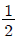
배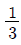
배
(정답률: 62%)
46. 다음 중 선형안테나의 설명으로 틀린 것은?
- 직렬공진하는 파장 중 가장 긴 파장을 고유파장이라 한다.
- 최저의 공진주파수를 고유주파수라 한다.
- 접지점에서 전류는 최소이고 전압은 최대이다.
- 개방점에서 전류는 0(zero)이고 전압은 최대이다.
(정답률: 34%)
47. 그림과 같이 도선의 길이가 λ/4인 선단을 단락할 경우 a, b 점에서 본 임피던스는? (단, λ는 전류의 파장임)
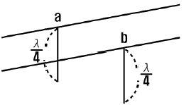
- 0
- 유도성
- 용량성
- ∞
(정답률: 30%)
48. 대류권 산란파의 특징이 아닌 것은?
- 기본 전파손실은 300㎞에서 약 180 ~ 220[㏈]이다.
- 산란영역이 너무 크면 전파왜곡이 발생한다.
- 적당한 주파수는 200 ~ 5000[㎑]이다.
- 지리적 조건의 영향을 받지 않는다.
(정답률: 50%)
49. 파라볼라 안테나(parabola antenna)의 이득은?
- 포물면경의 개구면에 반비례한다.
- 개구면의 면적과 이득은 전혀 관계가 없다.
- 같은 주파수에서는 개구면과 관계가 없다.
- 파장이 짧아질수록 이득이 매우 커진다.
(정답률: 알수없음)
50. 동축급전선의 정전용량이 10[㎊/m]일 때, VHF 주파수대의 특성 임피던스는? (단, 선간매질의 비유전율 (εS)은 2.25, 동선의 비투자율 (μS 은 1이다 또한 전파속도 νP는
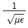
이다.)- 100[Ω]
- 500[Ω]
- 750[Ω]
- 1000[Ω]
(정답률: 알수없음)
51. λ/4 수직접지 안테나의 수직면내 지향 특성은?
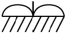
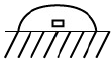
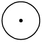
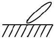
.
(정답률: 54%)
52. λ/2 다이폴 안테나에 대한 설명으로 틀린 것은?
- 실효길이는 λ/π이다.
- 복사 전계는
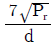
이다. - 전압 분포는 sin 분포로 나타내고, 전류 분포는 cos 분포로 나타낸다.
- 수직면 지향성은 ∞자 형이고, 수평면 지향성은 무지향성이다.
(정답률: 알수없음)
53. 전리층 전파에서 발생하는 페이딩 현상을 방지하는 방법이 아닌 것은?
- 주파수 다이버시티
- 공간 다이버시티
- 편파 다이버시티
- 변조 다이버시티
(정답률: 70%)
54. λ/4 수직 접지 안테나의 복사저항이 35[Ω], 접지저항이 5[Ω]이다. 안테나에 공급되는 고주파 전력이 5[㎾]일 때 20[㎞] 지점에서의 전계강도는 약 [㎷/m] 인가?
- 18
- 27
- 31
- 33
(정답률: 25%)
55. 라디오 덕트(Radio duct)의 발생 원인에 해당하지 않는 것은?
- 주간냉각에 의한 라디오 덕트
- 전선에 의한 라디오 덕트
- 이류에 의한 라디오 덕트
- 침강에 의한 라디오 덕트
(정답률: 알수없음)
56. 다음 중 종단저항이 없는 안테나는 어느 것인가?
- 웨이브 안테나
- 어골형 안테나
- 롬빅 안테나
- 정관형 안테나
(정답률: 28%)
57. 단파안테나는 장파안테나와 비교하여 다음과 같은 특성이 있다. 틀린 것은?
- 발사하려는 파장과 같은 고유파장의 안테나를 얻기 쉽다.
- 광대역성을 얻기 쉽다.
- 복사효율이 좋다.
- 주로 수직편하를 이용하므로 접지가 필요하다.
(정답률: 46%)
58. 전파가 전리층에 부딪혔을 때 그 주파수 이상으로 되면 투과하는 주파수를 무엇이라 하는가?
- 임계 주파수
- 자이로 주파수
- 최고사용 주파수
- 최저 주파수
(정답률: 80%)
59. 송시 안테나로부터 복사된 편파가 지구 표면으로 퍼지는 지상파가 아닌 것은?
- 대지 반사파
- 회절파
- 대류권파
- 지표파
(정답률: 47%)
60. 다음 중 진행파 안테나에 해당하지 않는 것은?
- 어골형 안테나
- 비버리지 안테나
- 반파장다이폴 안테나
- 진행파 V형 안테나
(정답률: 알수없음)
4과목: 전자계산기 일반 및 무선설비기준
61. 데이터 접근방법이 순차적으로 접근되는 기억장치로서 가장 적합하지 않은 것은?
- FIFO 메모리
- LIFO 메모리
- 자기 테이프
- HDD
(정답률: 42%)
62. 다음 중 현재 수행중인 명령어를 기억하는 레지스터는?
- MAR(Memory Address Register)
- IR(Instruction Register)
- PC(Program Counter)
- Accumulator
(정답률: 37%)
63. 다음 주소 지정 방식(Addressing Mode) 중에서 프로그램 카운터에 명령어의 주소부분을 더해서 실제 주소를 구하는 방식은?
- 직접 번지 방식
- 즉시 번지 방식
- 상대 번지 방식
- 레지스터 번지 방식
(정답률: 60%)
64. 마이크로컴퓨터의 직렬 입ㆍ출력 인터페이스가 아닌 것은?
- SIO
- USART
- USB
- PPI
(정답률: 24%)
65. 다음 중 자외선을 이용하여 내용을 지울 수 있는 ROM은?
- 마스크 ROM
- EEROM
- PROM
- EPROM
(정답률: 55%)
66. 컴퓨터가 프로그램을 수행하고 있는 동안 컴퓨터의 내부나 외부에서 응급상태가 발생하여 현재 수행 중인 프로그램을 일시적으로 중지하고 응급사태를 처리하는 기법은?
- DMA
- Time sharing
- Subroutine
- Interrupt
(정답률: 65%)
67. UNIX 의 운영체제(OS)에 주로 사용된 언어는?
- 어셈블리 언어
- BASIC 언어
- C 언어
- LISP 언어
(정답률: 42%)
68. 다음 16진수 73C.4E 를 10진수로 변환한 것 중 가장 근사치는?
- 185.23
- 1852.3⑤
- 18523.⑤
- 123.25
(정답률: 58%)
69. 명령 사이클 중에서 일반적으로 프로그램 카운터(PC) 값이 증가되는 사이클은?
- fetch cycle
- indirect cycle
- execute cycle
- direct cycle
(정답률: 37%)
70. 다음 중 이항 연산이 아닌 것은?
- OR
- AND
- Complement
- 산술 연산
(정답률: 73%)
71. 다음 중 인증의 모두가 면제되는 정보통신기기가 아닌것은?
- 시험연구를 위하여 제조하는 정보통신기기
- 전시회 행사 중에 판매가 목적인 정보통신기기
- 외국으로부터 도입하는 선박에 설치된 정보통신기기
- 외국의 기술자가 국내 산업체 등에 필요에 의하여 일정기간 내에 반출하는 조건으로 반입하는 정보통신기기
(정답률: 47%)
72. 다음 중 전파법의 목적이 아닌 것은?
- 전파의 진흥을 도모
- 전파이용기술의 개발을 촉진
- 전파자윈의 균등한 분배
- 공공복리의 증진에 이바지
(정답률: 40%)
73. 전파형식 J3E 를 사용하는 무선국 무선설비의 점유주파수대폭의 허용치는?
- 500㎐
- 1㎑
- 3㎑
- 25㎑
(정답률: 59%)
74. 다음 중 정보통신부장관이 전파자원을 확보하기 위하여 수립ㆍ시행하는 시책이 아닌 것은?
- 주파수의 국내등록
- 사용중인 주파수의 이용효율 향상
- 새로운 주파수의 이용기술 개발
- 국가간 전파혼신의 해소와 이의 방지를 위한 협의ㆍ조정
(정답률: 50%)
75. 형식검정을 받아야 하는 무선설비의 기기가 아닌 것은?
- 선박국용 무선방위측정기
- 경보자동전화장치
- 이동가입무선전화장치
- 디지털선택호출장치의 기기
(정답률: 46%)
76. 710㎑의 전파를 사용하는 방송국의 주파수허용편차는?
- 0.1㎐
- 1㎐
- 10㎐
- 100㎐
(정답률: 34%)
77. 수신설비가 충족하여야 할 조건으로 적합하지 않는 것은?
- 선택도가 클 것
- 내부잡음이 적을 것
- 이득이 높을 것
- 수신주파수는 운용범위 이내일 것
(정답률: 30%)
78. 무변조상태에서 송신장치로부터 송신공중선계의 급전선에 공급되는 전력으로서 무선주파수의 1 주기 동안에 걸쳐 평균한 것은?
- 평균전력
- 규격전력
- 반송파전력
- 첨두포락선전력
(정답률: 37%)
79. 다음 중 송신설비의 전력을 규격전력(PR)으로 표시하지 아니하는 것은?
- 실험국의 송신설비
- 라디오 부이의 송신설비
- 아마추어국의 송신설비
- 비상위치지시용 무선표지설비
(정답률: 알수없음)
80. 다음 중 스퓨리어스발사에 포함되지 않는 것은?
- 기생발사
- 고조파발사
- 대외역발사
- 상호변조 등에 의한 발사
(정답률: 42%)